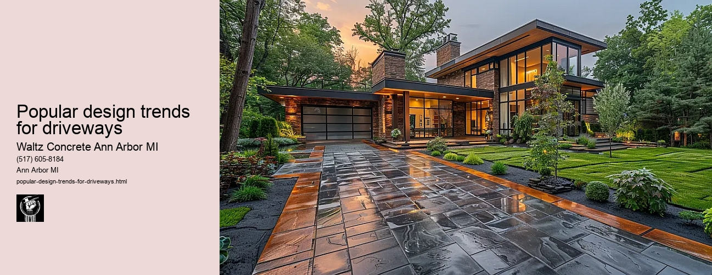

News
Concrete Driveway Installation Ann Arbor Mi
Concrete Driveway Installation Ann Arbor Mi
Choosing the right contractor for installation
Cost of concrete driveway installation in Ann Arbor
Permit requirements for driveway installation in Ann Arbor
The process and timeline of concrete driveway installation
Different types of concrete used in driveways
Maintenance and Repair of Concrete Driveways in Ann Arbor Mi
Maintenance and Repair of Concrete Driveways in Ann Arbor Mi
Preventive maintenance tips for durability
Common causes for concrete driveway damage
Professional companies offering repair services in Ann Arbor
Doityourself versus professional repairs
Costs associated with repairing a concrete driveway
Designs and Styles of Concrete Driveways in Ann Arbor Mi
Designs and Styles of Concrete Driveways in Ann Arbor Mi
Popular design trends for driveways
Considering climate factors when choosing a design or style
Unique customizations available for concrete driveways
Influence of home architecture on driveway design
Stamped stained and decorative options
Environmental Impact of Concrete Driveways in Ann Arbor Mi
Environmental Impact of Concrete Driveways in Ann Arbor Mi
Carbon footprint associated with concrete production
Use of sustainable materials in concrete driveways
Drainage considerations to reduce environmental impact
Local regulations regarding environmentally friendly driveways
Potential use of permeable or porous pavement
Alternatives to Concrete Driveways in Ann Arbor Mi
Alternatives to Concrete Driveways in Ann Arbor Mi
Asphalt driveways and their proscons
Paver stone driveways and their benefitsdrawbacks
Gravel or crushed stone as an alternative option
Comparing costs between different driveway materials
Resinbound surfaces as emerging technology
About Us
Contact Us

Popular design trends for driveways
Popular design trends for driveways
Title: Popular Design Trends for Driveways
In recent years, the humble driveway has evolved from a mere practical necessity to an extension of our homes' aesthetic appeal. Homeowners are investing more time and resources into creating driveways that not only serve their basic function but also enhance their property's overall appearance. This essay will explore some of the most popular design trends for driveways that have gained traction over the past few years.
One of the most notable trends is the use of permeable paving systems. These are designed to allow rainwater to seep through the surface into the ground below, reducing runoff and helping replenish groundwater supplies. Permeable paving materials can range from porous asphalt and concrete to unique systems incorporating spaced pavers with gravel or grass in between. Besides being environmentally friendly, these designs add a touch of elegance and sophistication to any home.
Stamped concrete driveways have also become increasingly popular due to their versatility and durability. Stamped concrete allows homeowners to replicate high-end materials such as brick, stone, or slate at a fraction of the cost. Moreover, it offers an array of color options enabling homeowners to customize their driveways according to their preferred aesthetics.
Paver driveways are another trend that adds significant visual interest and value to properties. They come in various shapes (like rectangular or hexagonal), sizes, colors, and textures all contributing towards creating intricate patterns that make a statement right at your home's entrance.
Another trend gaining momentum is integrating greenery into driveway design - this involves using grass strips or moss between pavers or along driveway borders which provides a delightful contrast against hard surfaces while promoting eco-friendliness.
In addition, lighting has become an integral part of modern driveway design. Whether its subtle LED lights embedded into pavement edges or solar-powered lanterns scattered along its length; strategic lighting can transform ordinary-looking driveways into enchanting pathways during nighttime hours.
Furthermore, heated driveways are increasingly becoming a preferred choice, especially in regions with harsh winters. These driveways use radiant heating systems to melt snow and ice, preventing accumulation and the need for physical snow removal.
Lastly, circular or 'roundabout' driveways have become fairly popular in larger properties. Not only do these driveways provide easy access and exit, but they also allow for an attractive central feature such as a fountain or a landscaped island.
In conclusion, driveway design has come a long way from plain asphalt or concrete slabs. The current trends lean towards designs that are functional yet aesthetically pleasing and environmentally friendly. From permeable paving systems to stamped concrete designs, green integrated designs to heated systems; there's no shortage of options for homeowners looking to upgrade their driveways.
Whether you're building a new home or renovating an existing one, consider these popular design trends for driveways to enhance your propertys curb appeal while ensuring functionality.
Designs and Styles of Concrete Driveways in Ann Arbor Mi
Popular design trends for driveways
Frequently Asked Questions
What are the current popular design trends for concrete driveways in Ann Arbor, MI?
The most popular design trends include exposed aggregate finish, stamped concrete patterns, colored concrete, and decorative borders.
Can the harsh weather conditions in Ann Arbor, MI affect the long-term durability of these driveway designs?
Yes, weather conditions can impact the longevity of a driveway. However, using high-quality sealers and regular maintenance can help protect your driveway from damage due to weather.
How does cost compare between these popular design options for concrete driveways?
Costs can vary significantly depending on your choice of design. Basic concrete driveways are typically cheaper while customized designs like stamped or colored concrete might be more expensive due to their complexity.
How long does it typically take to install a new trendy concrete driveway in Ann Arbor, MI?
Depending on its size and complexity of the design chosen, it could take anywhere from a week to several weeks to install a new concrete driveway.
Popular design trends for driveways